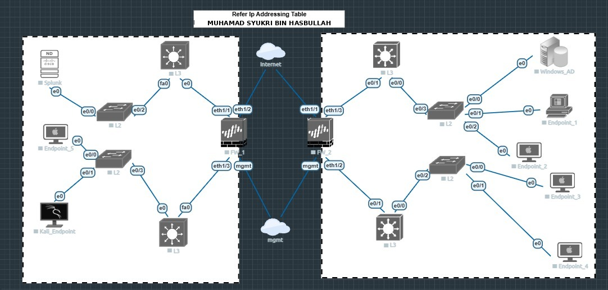

NETWORKINGINFRASTRUCTURE
Small Network Security Architecture
Set up a multi-site network with Layer 2/Layer 3 switching, perimeter firewalls, Windows Server, Active Directory and centralized security log monitoring with Splunk Enterprise.
VIEW PROJECT DETAILS →